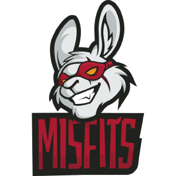

MisFits est une équipe européenne, formée suite à la fermeture de la structure Renegades Banditos.
Directement projeté sur la scène des Challengers Séries, le manager Ali "Alicus" Saba, le coach Hussain "xDaku" Moosvi et son assistant Choi "Paragon" Hyun-il ont eu un grand travail à faire pour que l'équipe soit à la hauteur du défis.
L'équipe des Misfits à très rapidement prise de l'importance grâce aux performances de ses joueurs.